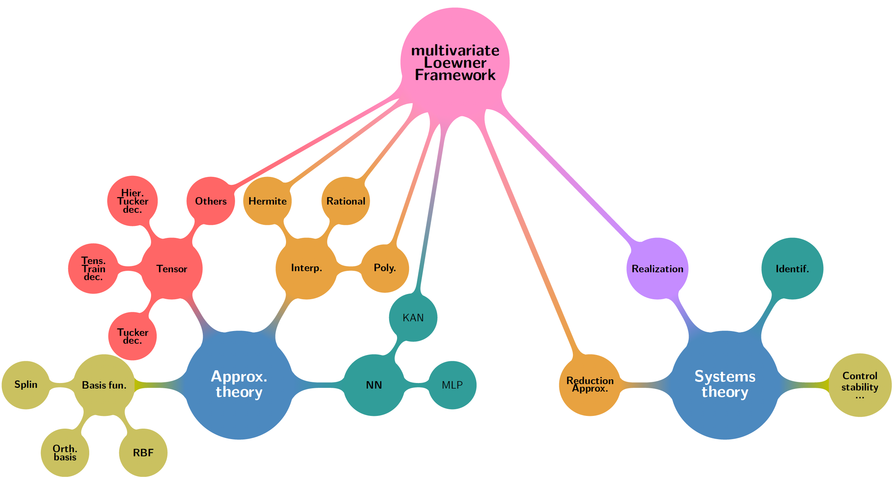

This workshop presents the Loewner Framework (LF), a data-driven approach for linear time-invariant multi-input multi-output model reduction, approximation, and identification.
The LF connects rational interpolation in barycentric form to minimal state-space realization through the Loewner matrix, providing surrogate models directly from measured data using only basic linear algebra (e.g., SVD-like decompositions) without iterations or optimization.
It bridges approximation theory and dynamical system theory, supporting both barycentric rational forms and state-space realizations with minimal order and complexity. The tutorial covers fundamentals and recent results, with emphasis on practical implementation through open-source MATLAB codes, detailed exercises, and academic and industrial examples.
Optional extensions to parametric, bilinear, and quadratic models may be included.

Program attempt
- a
Material
Come or submit your own problem
We propose to deal work on your problem. This offer consider one or multiple of the following cases:
- Reduce any descriptor state-space model;
>> Input: a ss or dss Matlab model - Approximate any (real or complex) transfer function;
- Approximate any (real or complex) multivariate transfer function;
- Design a
References
- Loewner basics
- Loewner for data-driven control
- Loewner applications
